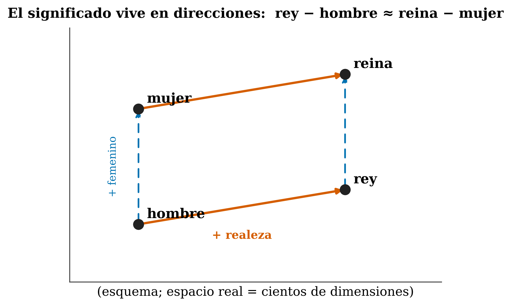

4 Embeddings and the residual stream
Where we are. In the previous chapter we turned text into tokens: whole numbers. But a number like 15496 tells the model nothing about meaning —15496 is no “closer” to 15497 than it is to 42. This chapter takes the second step: turning each token into a vector (its embedding) that does capture relationships, and placing it on the residual stream, the “shared memory” along which information travels inside the model. By the end you’ll understand why models use vectors, how they capture meaning, and what the real communication channel between layers actually is.
4.1 The idea in one sentence
Each token is replaced by a learned vector of numbers —its embedding— and all those vectors travel along a common channel, the residual stream, where every layer reads and keeps adding information without erasing what came before.
4.2 Key concepts and their role in the transformer
Before diving into the details, let’s define this chapter’s terms and what each one is for inside a transformer:
- Embedding. Definition: the learned vector of numbers that represents a token. In the transformer: it turns a meaningless integer into something with distance and direction, which is what the model can actually process.
- Embedding matrix (
E). Definition: the big table (vocabulary ×d_model) with one row per token. In the transformer: the token ID selects its row; this is where all the input embeddings live. d_model. Definition: the dimension of each vector and, therefore, the “width” of the residual stream. In the transformer: it sets how much distinguishing capacity the model has; wider = finer detail at the cost of more compute.- Meaning as direction. Definition: the idea that relationships (gender, plural…) live in directions of the space, not on individual axes (king − man + woman ≈ queen). In the transformer: this is the geometry an integer can’t provide, and what makes vectors useful.
- Static vs. contextual. Definition: the input embedding is fixed per token; after passing through the layers, it becomes contextualized. In the transformer: “riverbank” and “central bank” start from the same vector, but the layers pull them apart; contextualization doesn’t live in
E, but in what gets written on top of it. - Residual stream. Definition: the common channel —a “shared whiteboard”— along which each token’s vector travels. In the transformer: the embedding initializes it and every layer reads and ADDS (doesn’t erase), so earlier information persists and can be combined later on.
- Residual connection. Definition: the sum \(x \leftarrow x + f(x)\) that adds each block’s contribution instead of replacing it. In the transformer: this is what makes it possible to train very deep models without the signal getting lost.
- Position. Definition: order information that is added to the embedding, because attention on its own is permutation-invariant. In the transformer: without it the model couldn’t tell “dog bites man” from “man bites dog”; modern models inject it with RoPE (Ch. 8).
With these in hand, let’s flesh them out.
4.3 What an embedding is
How do we get from an integer to something with meaning? The model keeps a big table, the embedding matrix E, of shape (vocabulary_size × d_model): one row per token in the vocabulary, and each row is a vector of d_model numbers. The token ID simply selects its row:
import torch, torch.nn as nn
vocab, d_model = 50257, 768 # e.g. GPT-2
E = nn.Embedding(vocab, d_model) # the matrix (it's learned)
ids = torch.tensor([15496, 1917, 0]) # "Hello", " world", "!"
vecs = E(ids) # (3, 768): one vector per token
print(vecs.shape) # torch.Size([3, 768])Mathematically this is equivalent to multiplying a one-hot vector (all zeros except a single 1 at the token’s position) by E —but in practice it’s just “go to row number id”.
4.4 Why a vector and not the integer
Wouldn’t the token’s number be enough? No, because integers have no notion of similarity: 47 is no “more similar” to 48 than to 9000. A vector, by contrast, lives in a space that does have distance and direction: tokens with similar meanings can end up close together, and relationships (gender, plural, verb tense…) can correspond to directions. That geometry is what the model needs and an integer can’t give.
4.5 How they are learned
Embeddings are not handcrafted or downloaded: they start with random values and are adjusted alongside the whole model during training, by backpropagation, like any other weight. The semantic structure emerges on its own from training to predict text.
4.6 Meaning lives in directions
The intuition predates transformers. The distributional hypothesis (Firth 1957) sums it up: “you shall know a word by the company it keeps” —words that appear in similar contexts mean similar things. Methods like word2vec (Mikolov et al. 2013) and GloVe (Pennington et al. 2014) brought this to vectors, with the now-famous example:

king − man + woman ≈ queen. In a real model the space has hundreds of dimensions; this is just a visual intuition.
\[ \text{vec}(\text{king}) - \text{vec}(\text{man}) + \text{vec}(\text{woman}) \approx \text{vec}(\text{queen}) \]
The analogy is illustrative, not an exact law: ≈ is not =, and in practice it doesn’t work perfectly for every word. And beware: individual dimensions are not interpretable one by one; meaning lives in directions of the space, not on specific axes. A dimension being “the gender one” is the toy exception, not the rule.
4.7 The subtlety almost everyone confuses: static vs. contextual
There’s an important subtlety here. word2vec vectors are static: the word “bank” has a single vector, no matter the sentence. A transformer’s input embeddings (the rows of E) are also static per token.
The key difference: in a transformer, that static vector becomes contextualized as it passes through the layers. After attention, the vector for “bank” in “riverbank” already differs from the one in “central bank”. Contextualization isn’t in
E; it’s in what the layers keep writing on top —and that brings us to the residual stream.
4.9 How big is d_model?
d_model (the dimension of each vector and, therefore, the “width” of the residual stream) has grown along with the models:
| Model | d_model |
|---|---|
| Original Transformer (2017) | 512 |
| GPT-2 small / BERT-base | 768 |
| LLaMA-2-7B | 4096 |
| GPT-3 (175B) | 12288 |
More d_model = more capacity to make fine distinctions (and a wider residual stream), but also more parameters and more compute. It’s another trade-off, like the vocabulary size from the previous chapter.
4.10 And where does position come in?
A detail we close here and open fully later on: as it stands, attention doesn’t know the order of the tokens (it’s “permutation-invariant”). For order to matter, position information is added to each token’s embedding. The original Transformer used sinusoidal positions; GPT-2 and BERT used learned ones; modern models use RoPE —which we’ll cover in detail in Chapter 8.
4.11 Summary
- An embedding is the learned vector that represents a token; it lives in the matrix
E(vocabulary ×d_model), and the token ID selects its row. - We use vectors (not the integer) because they provide distance and direction: meaning lives in directions (king − man ≈ queen − woman), not on individual axes.
- Input embeddings are static per token; the layers contextualize them afterward.
- The residual stream is the common channel: the embedding initializes it, every layer reads and ADDS (doesn’t erase), and the final value is un-embedded to predict.
d_model(the width of the stream) ranges from 512 to 12288: more capacity in exchange for more compute.
Next (Chapter 4): we now have the vectors on the stream. Time for the heart of the book —how attention lets each token look at the others and blend their information.
4.12 Exercises
- The
Etable. If the vocabulary has 50,000 tokens andd_model = 768, how many numbers (parameters) does the embedding matrix have? And withd_model = 4096? - Static vs. contextual. Explain in your own words why “bank” has one input embedding but different representations in deep layers depending on the sentence.
- Additive. On the residual stream,
x ← x + FFN(x). What’s the advantage of adding rather than replacingx? (Hint: what happens to the information from earlier layers?) - Directions. If
vec(Paris) − vec(France) + vec(Spain) ≈ vec(?), what word would you expect, and why?